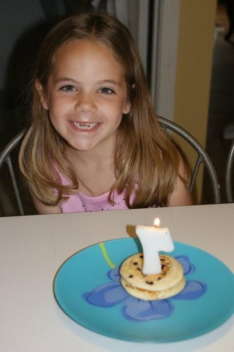
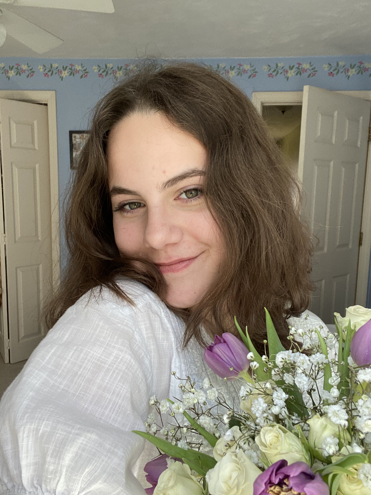

Who Am I?
January 18, 2023
When I was younger, I had never used the term writer and applied it to myself. When people asked about my mother I told them she was a writer. She was constantly putting out new blog pieces and quietly scribbling away in copious amounts of journals she seemed to fill up with lightning speed. When people asked about my sister, I told them she was a writer, but one concerned with the facts, the “true story” of it all. She knew this was what she wanted to do from the minute she sat in a room with other self proclaimed writers. I had tried using the term writer for myself, but for some reason it had always felt like I was wearing the wrong name tag. It was too similar to that of my family members and therefore I was the one that needed to change because I felt like an intruder. Not calling myself a writer didn’t mean that wasn’t exactly what I was already doing. I’ve kept a diary from the time I was seven, going through waves of filling the pages, and then droughts of dry spells with no words to be said. It just has taken me years of practice to be able to call myself one.
With my growing confidence in calling myself a “writer”, I’ve found myself often obsessing about exactly what kind of writer I am. Am I strictly creative? Am I journalistic and factual? Am I poetic? I’ve moved in and around each of these labels, trying to find one that sticks and one that feels like me. In practicing I’ve found some words that feel right to me, like trying on a bunch of different hats to find one and instead I’ve found a handful. I’m an intuitive writer: I write when the urge compels me, waiting for it to take hold so that I can pour my soul out onto the page. I’m an emotional writer: I let my sadness control my words to spin into a story, I let my anger write all over the paper until it’s gone, I let my joy bound and soar and take over my scribbling hand. I’m a creative writer: constantly conjuring scenes in my head and letting them play out as my fingers type too fast for my brain to keep up with. I feel comfortable in the world in between words I’ve created for myself, weaving each label I acquire into a blanket to keep myself warm.
Journaling has helped me find my footing in writing. I feel immensely grateful for this practice because it’s taught me to channel my emotions and leave nothing unsaid; put everything into words to give it new life, new meaning. It’s created new perspectives for me and kept my safe haven for my most personal feelings and thoughts intact. At this point in my life, I don’t think I have fully found my voice as a writer. As far as I know, I could never have just one voice for writing but instead be made of a collection of many. As for where I am right now, using that voice is definitely something I know how to do.
April 14, 2023
I wanted to attempt to avoid the cliche of it all but most writers have to go that way anyway, they can’t help it . It feels like it’s in our DNA, encoded cleverly but also hidden in plain sight. The writing instinct has been there all along for me, but it took me nearly twenty years to find it and call it out for what it was.
I think I’ve begun to approach writing with a gentler hand and wider eyes. For a while, it has felt like writing was a daunting task and something where I needed to constantly be honing my skills and perfecting them. I needed to be consistently sharpening the knife so that I wouldn’t dull, or else I would fail and need to start all over again. I am slowly training myself out of this difficult habit and I think it has started to work its way through my system. I’m learning that my progress does not need to be linear, nor should it be. I am allowing myself the good days where it feels easy, and I can let words pour out of me and tangle themselves on a page. I am also allowing myself the bad days; the ones where the words get stuck in my throat and my fingers feel paralyzed. I am letting myself feel and experience all of it because in the end, writing is an instinct I have, almost animal. I have it and I will survive.
Tuning my mind to a specific audience for my writing has opened the floodgates for perspectives I hadn’t thought possible. I have found myself looking at the world differently and having a mind for poetry in the things I observe; something I have never seen in myself before. Writing my thoughts and transforming them into poetry is a new facet to my instinct that I’ve discovered. I never felt particularly pulled to be a poet, but I am thinking that I can be both a writer and a poet. The two can hold hands and in turn support my words and I. I didn’t know I could look at things, wonder about them, write it down and call it writing.
If I feel that I’ve grown this much in three months, it’s hard to fathom how much my branches might further grow as the year continues, as my life continues. I am hoping to open my mind even more to new experiences, audiences, and perspectives that will give fresh life and meaning to words I’ve written and words yet to be said. I have a craving to share my words, my writing, my art with other people. This is how I want to communicate my feelings and experiences, however complex or simple they may be. I want to use writing as a tool to connect me to others; people who stand where I’ve stood, people who unintentionally can read my mind, people who have become who I want to be. I don’t know when I’ll be ready to share these things, but as always, the instinct is there.
